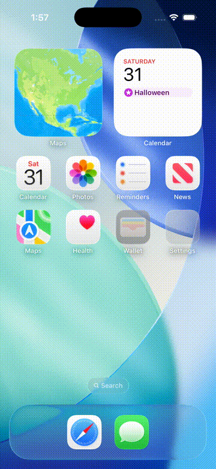

Simulator run (not a physical iPhone), fixture launch (not live gameplay). The kept journey testManualStreamCanBeStoppedWithPartialOutputRetained on the refactored app: the row labels, Send state, Stop and waiting knot now come from the presenter, and the screen behaves as before.
